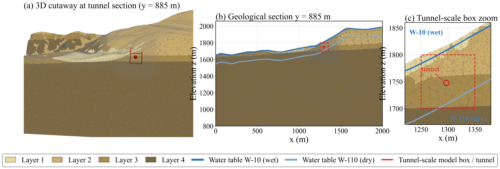
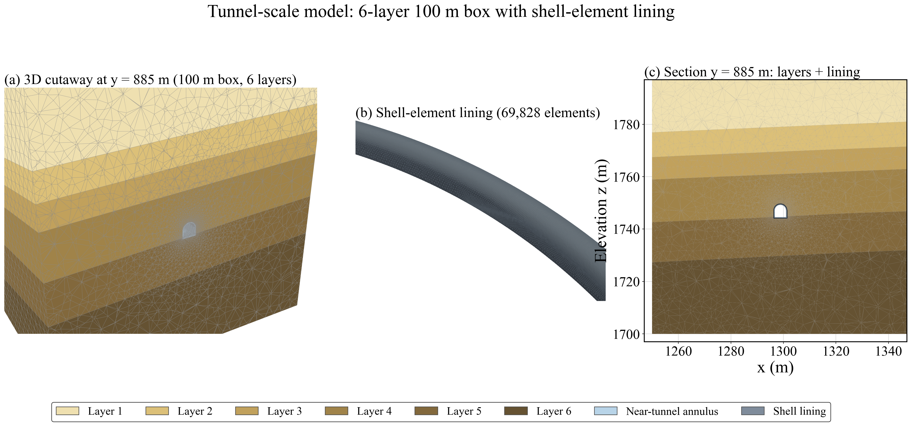
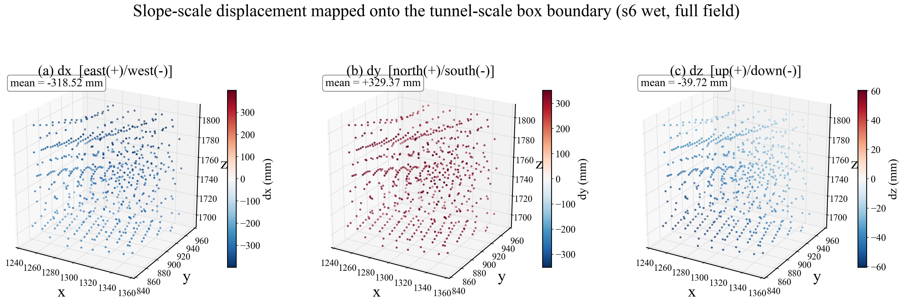
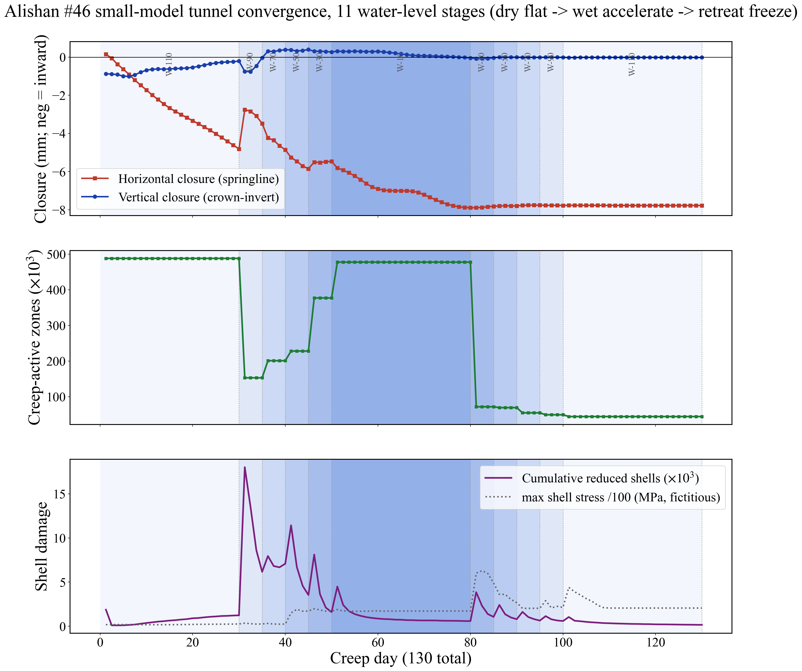

SLOPE · MODEL
邊坡尺度：地形、四層地質與水位面家族


每階段解算程序：切換 W-NN → 滲流穩態 → 有效應力更新 → 階段歷時內積分依時變形 → 輸出位移／速度場。
TUNNEL · MODEL
隧道圍岩擾動尺度：六層地質＋殼襯砌＋真實線形


線形忠實：平曲線（頂點 y=885）＋3.74% 縱坡；主岩層（第4層鏽染滲水互層）c=0.10 MPa、φ=30°；近壁導水×100 環帶＋洞壁排水。
TUNNEL · RESULTS I
近場水流：排水暈不動、遠場抬升 → 雨季水力梯度陡增


遠場推擠與近場水力梯度並存作用（個別貢獻未設控制組分離——誠實界定）。
TUNNEL · RESULTS II
弱層帶狀活化 × 收斂階梯累積不回彈


收斂速率升水—雨峰加快、退水趨緩——與邊坡歷線同步階梯；循環內單向累積。
COUPLED · MODEL
圍岩襯砌互制尺度：鍵結顆粒襯砌＋隨縱坡錨定帶

零重力原位重澆初始態：排除自重堆積與施工史 → 僅解析增量反應；s1 斷鍵 2,751 條＝初始基準。
錨定帶隨縱坡（v6 修正）：z ≤ rim(y)+0.41、rim(y)=1743.97+0.0372(y−860) → 沿線各環束制一致，展開圖三角形假象消除。
斷鍵＝微損傷事件；經三軌判別（斷面弧狀→環向；PCA 主軸角→斜向／縱向）重建為裂縫跡。
COUPLED · RESULTS IV
3D 裂縫演化環視：11 階段逐段成長（每階段一圈，5 秒）

s1–s5 升水：右腰帶零星紅弧萌生、逐階增多。
s6 雨峰：環向弧沿全段大量開展（紅 153 m），斜向少量出現。
s7–s11 退水凍結：畫面近乎靜止——s11 與 s6 幾乎重合（紅 171 m），僅微幅補長。
動態版直接可視化滯動：裂縫只在濕窗生長、退水即凍。